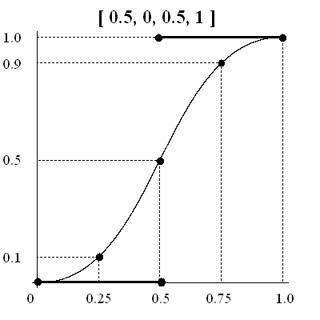
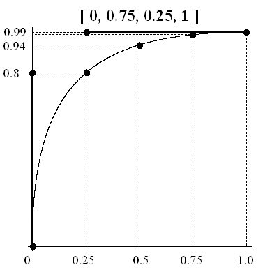
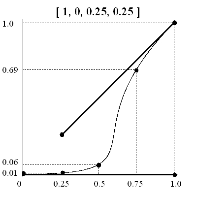

net.rim.device.api.animation.AbstractAnimation
net.rim.device.api.animation.Animation
net.rim.device.api.animation.AbstractAnimation
net.rim.device.api.animation.Animation
|
|||||||||
| PREV CLASS NEXT CLASS | FRAMES NO FRAMES | ||||||||
| SUMMARY: NESTED | FIELD | CONSTR | METHOD | DETAIL: FIELD | CONSTR | METHOD | ||||||||
java.lang.Object
public class Animation
Defines a class that can animate values of an Animatable target property according to
an AnimationKeyframeSequence over a specified period of time.
Binds an AnimationKeyframeSequence and Animatable object target and target property.
This class is used to define how the values of a target property change over time based on the given sequence data.
// Create the animator Animator animator = new Animator(25); // Create the animatable target AnimatedScalar alpha = new AnimatedScalar(1.0f); // Create a fade-out animation. This animates the alpha value from 1.0 to 0.0. Animation animation = animator.addAnimationFromTo(alpha, AnimatedScalar.ANIMATION_PROPERTY_SCALAR, 1.0f, 0.0f, Animation.EASINGCURVE_LINEAR, 1000L); animation.setRepeatCount(1.0f);
// Create the animator
Animator animator = new Animator(25);
// Create the animatable target
AnimatedVector position = new AnimatedVector( new float[] { 0.0f, 0.0f }, 0 );
// Create a translation animation on the target to animate the position vector 'to' position (100, 100)
Animation animation = animator.addAnimationTo(position, AnimatedVector.ANIMATION_PROPERTY_VECTOR, new float[] { 100.0f, 100.0f }, 0, Animation.EASINGCURVE_LINEAR, 1000L);
animation.setRepeatCount(1.0f);
// Schedules the animation to begin with a 1 second delay. animation.begin(1000L);
Pace can be controlled by the use of either an easing curve function or a cubic Bézier spline. In both cases, the domain represents the fraction of the duration passed, while the range represents the fraction of the distance travelled.
If f(t) is an easing function and the “position” of an attribute of an
animatable object changes from p1 to p2 during d time units (e.g., ms).
Then at time t (0 <= t <= d), the attribute will be at position
Here, “position” can be generalized to any numerical quantity.
There are four main categories of easing in/out functions:
The Animation API provides support for the following easing functions. Note that the picture in the second column of each row is the “normalized” graph of the corresponding easing function where the value of the domain is in the interval [0,1].
| EASINGCURVE_LINEAR | Linear | |
| EASINGCURVE_QUADRATIC_IN | Quadratic Ease-In | |
| EASINGCURVE_CUBIC_IN | Cubic Ease-In | |
| EASINGCURVE_QUARTIC_IN | Quartic Ease-In | |
| EASINGCURVE_QUINTIC_IN | Quintic Ease-In | |
| EASINGCURVE_SINE_IN | Sine Ease-In | |
| EASINGCURVE_EXPONENTIAL_IN | Exponential Ease-In | |
| EASINGCURVE_CIRCULAR_IN | Curve Ease-In | |
| EASINGCURVE_ELASTIC_IN | Elastic Ease-In | |
| EASINGCURVE_OVERSHOOT_IN | Overshoot Ease-In | |
| EASINGCURVE_BOUNCE_IN | Bounce Ease-In | |
| EASINGCURVE_QUADRATIC_OUT | Quadratic Ease-Out | |
| EASINGCURVE_CUBIC_OUT | Cubic Ease-Out | |
| EASINGCURVE_QUARTIC_OUT |  |
Quartic Ease-Out |
| EASINGCURVE_QUINTIC_OUT | Quintic Ease-Out | |
| EASINGCURVE_SINE_OUT | Sine Ease-Out | |
| EASINGCURVE_EXPONENTIAL_OUT | Exponential Ease-Out | |
| EASINGCURVE_CIRCULAR_OUT | Circular Ease-Out | |
| EASINGCURVE_ELASTIC_OUT |  |
Elastic Ease-Out |
| EASINGCURVE_OVERSHOOT_OUT | Overshoot Ease-Out | |
| EASINGCURVE_BOUNCE_OUT | Bounce Ease-Out | |
| EASINGCURVE_QUADRATIC_INOUT | Quadratic Ease-In-Out | |
| EASINGCURVE_CUBIC_INOUT |  |
Cubic Ease-In-Out |
| EASINGCURVE_QUARTIC_INOUT | Quartic Ease-In-Out | |
| EASINGCURVE_QUINTIC_INOUT | Quintic Ease-In-Out | |
| EASINGCURVE_SINE_INOUT | Sine Ease-In-Out | |
| EASINGCURVE_EXPONENTIAL_INOUT | Exponential Ease-In-Out | |
| EASINGCURVE_CIRCULAR_INOUT | Circular Ease-In-Out | |
| EASINGCURVE_ELASTIC_INOUT | Elastic Ease-In-Out | |
| EASINGCURVE_OVERSHOOT_INOUT |  |
Overshoot Ease-In-Out |
| EASINGCURVE_BOUNCE_INOUT | Bounce Ease-In-Out | |
| EASINGCURVE_QUADRATIC_OUTIN | Quadratic Ease-Out-In | |
| EASINGCURVE_CUBIC_OUTIN | Cubic Ease-Out-In | |
| EASINGCURVE_QUARTIC_OUTIN | Quartic Ease-Out-In | |
| EASINGCURVE_QUINTIC_OUTIN | Quintic Ease-Out-In | |
| EASINGCURVE_SINE_OUTIN | Sine Ease-Out-In | |
| EASINGCURVE_EXPONENTIAL_OUTIN |  |
Exponential Ease-Out-In |
| EASINGCURVE_CIRCULAR_OUTIN | Circular Ease-Out-In | |
| EASINGCURVE_ELASTIC_OUTIN | Elastic Ease-Out-In | |
| EASINGCURVE_OVERSHOOT_OUTIN | Overshoot Ease-Out-In | |
| EASINGCURVE_BOUNCE_OUTIN |  |
Bounce Ease-Out-In |
With discrete interpolation (EASINGCURVE_DISCRETE), the easing function jumps from one value
to the next without interpolation. Let v_i be the value at time
t_i for 0 <= i <= n. Then for all
t in [ t_i, t_(i+1) ), i = 0, ..., n-1,
the easing function is defined as
As an example, for the following table:
| i | 0 | 1 | 2 | 3 | 4 | 5 |
| t_i | 0 | 5 | 10 | 15 | 20 | 25 |
| v_i | 0 | 1 | 2 | 4 | 8 | 15 |
the graph for the easing function using discrete interpolation has the following form:
In general, an easing function can be represented by a piecewise univariate function. In the cubic case, for example, the easing functions are:
The velocity at each time fraction can be easily computed, and is shown in the following table:
| t | EASINGCURVE_CUBIC_IN | EASINGCURVE_CUBIC_OUT | EASINGCURVE_CUBIC_INOUT | EASINGCURVE_CUBIC_OUTIN |
| 0.0 | 0.00 | 3.00 | 0.00 | 3.00 |
| 0.1 | 0.03 | 2.43 | 0.12 | 1.92 |
| 0.2 | 0.12 | 1.92 | 0.48 | 1.08 |
| 0.3 | 0.27 | 1.47 | 1.08 | 0.48 |
| 0.4 | 0.48 | 1.08 | 1.92 | 0.12 |
| 0.5 | 0.75 | 0.75 | 3.00 | 0.00 |
| 0.6 | 1.08 | 0.48 | 1.92 | 0.12 |
| 0.7 | 1.47 | 0.27 | 1.08 | 0.48 |
| 0.8 | 1.92 | 0.12 | 0.48 | 1.08 |
| 0.9 | 2.43 | 0.03 | 0.12 | 1.92 |
| 1.0 | 3.00 | 0.00 | 0.00 | 3.00 |
Observe that the above figures agree with the types of the four easing functions (in terms of acceleration/deceleration). The following picture shows the location of a ball moving along a line parallel to the horizontal axis. The start and end positions are 50 and 200, respectively. The duration is 10ms. The pace is controlled using the four cubic easing functions.
In using the EASINGCURVE_SPLINE curve type, a user elects to use a custom easing
curve definition from the keyspline data that can be specified using:
AnimationKeyframeSequence#setKeysplines(float[])
This methods allows a user to specify 2 (x,y) control points per keyframe as an array.
With cubic Bézier splines, one can control the acceleration/deceleration during each time interval by providing the two control points.
Each of the following diagrams illustrate the effect of the control points for a single interval. The title [x_1, y_1, x_2, y_2] means the two control points (x_1, y_1) and (x_2, y_2) are used. The horizontal axis can be thought of as the input value for the unit progress of interpolation within the interval, i.e., the pace with which interpolation proceeds along the given interval. The vertical axis is the resulting value for the unit progress.

|
 | ||
|  |  |
The following diagram shows the locations of four balls, each of which moves along a line parallel to the horizontal axis. The start and end positions are 50 and 200, respectively. The duration is 10ms. The paces are controlled by the four sets of control points whose effects are illustrated in the diagrams above.
| Method Summary | ||
|---|---|---|
void |
begin(long beginDelay)
Schedules the animation to begin after the specified delay. |
|
void |
bind(Animatable target,
int property,
AnimationKeyframeSequence sequence)
Binds an Animatable target's property and AnimationKeyframeSequence to the animation. |
|
boolean |
canRestart()
Determines if the animation can be restarted. |
|
void |
end(long endDelay)
Schedules the animation to end after the specified delay. |
|
long |
getDuration()
Gets the duration of the animation. |
|
int |
getEasingCurve()
Gets the easing curve that will be used to interpolate the animation's sequence data. |
|
long |
getElapsedTime()
Returns the elapsed time for the animation. |
|
long |
getRemainingTime()
Returns the amount of time remaining in the animation. |
|
float |
getRepeatCount()
Gets the number of times the animation will repeat. |
|
long |
getRepeatDuration()
Gets the total duration to repeat the animation for. |
|
int |
getRestartRule()
Gets the restart rule being applied on the animation. |
|
AnimationKeyframeSequence |
getSequence()
Gets the AnimationKeyframeSequence bound to the animation. |
|
Animatable |
getTarget()
Gets the target Animatable object bound to the animation. |
|
int |
getTargetProperty()
Gets the target property on the Animatable bound to the animation. |
|
boolean |
isAdditive()
Gets whether the animation is additive. |
|
boolean |
isCumulative()
Gets whether the animation is cumulative. |
|
boolean |
isFillFreeze()
Gets the fill freeze mode for the animation. |
|
boolean |
isRestartToggleReverse()
Gets if the animation automatically toggle the animation in reverse each time it is restarted. |
|
void |
setAdditive(boolean additive)
Sets whether the animation is additive. |
|
void |
setCumulative(boolean cumulative)
Sets whether the animation is cumulative. |
|
void |
setDuration(long duration)
Sets the duration of the animation. |
|
void |
setEasingCurve(int easingCurve)
Sets the easing curve that will be used to interpolate the animations's sequence data. |
|
void |
setFillFreeze(boolean freeze)
Sets the fill freeze mode for the animation. |
|
void |
setRepeatCount(float count)
Sets the number of times to repeat the animation. |
|
void |
setRepeatDuration(long repeatDur)
Sets the total duration to repeat the animation for. |
|
void |
setRestartRule(int restartRule)
Sets the restart rule to apply on the animation. |
|
void |
setRestartToggleReverse(boolean restartToggleReverse)
Sets whether to automatically toggle the animation in reverse each time it is restarted. |
|
| Methods inherited from class net.rim.device.api.animation.AbstractAnimation |
|---|
addBeginTrigger, addEndTrigger, getAnimator, getBeginTrigger, getEndTrigger, getListener, getName, getSpeed, hasBeginTriggers, hasEndTriggers, isStarted, removeAllBeginTriggers, removeAllEndTriggers, removeBeginTrigger, removeEndTrigger, setListener, setName, setSpeed |
| Methods inherited from class java.lang.Object |
|---|
equals, getClass, hashCode, notify, notifyAll, toString, wait, wait, wait |
| Field Detail |
|---|
public static final int RESTART_RULE_ALWAYS
Animation can be started at any time.
This is the default restart rule.
Animation.setRestartRule(int),
Animation.getRestartRule(),
Constant Field Valuespublic static final int RESTART_RULE_WHEN_NOT_ACTIVE
Animation can only be restarted when it is not active.
Animation.setRestartRule(int),
Animation.getRestartRule(),
Constant Field Valuespublic static final int RESTART_RULE_NEVER
Animation cannot be restarted.
Animation.setRestartRule(int),
Animation.getRestartRule(),
Constant Field Valuespublic static final long REPEAT_DURATION_INDEFINITE
Animation will repeat indefintely until stopped.
Animation.setRepeatDuration(long),
Animation.getRepeatDuration(),
Constant Field Valuespublic static final float REPEAT_COUNT_INDEFINITE
Animation will repeat indefinitely until stopped.
Animation.setRepeatCount(float),
Animation.getRepeatCount(),
Constant Field Valuespublic static final int EASINGCURVE_SPLINE
public static final int EASINGCURVE_DISCRETE
public static final int EASINGCURVE_LINEAR
public static final int EASINGCURVE_QUADRATIC_IN
public static final int EASINGCURVE_CUBIC_IN
public static final int EASINGCURVE_QUARTIC_IN
public static final int EASINGCURVE_QUINTIC_IN
public static final int EASINGCURVE_SINE_IN
public static final int EASINGCURVE_EXPONENTIAL_IN
public static final int EASINGCURVE_CIRCULAR_IN
public static final int EASINGCURVE_ELASTIC_IN
public static final int EASINGCURVE_OVERSHOOT_IN
public static final int EASINGCURVE_BOUNCE_IN
public static final int EASINGCURVE_QUADRATIC_OUT
public static final int EASINGCURVE_CUBIC_OUT
public static final int EASINGCURVE_QUARTIC_OUT
public static final int EASINGCURVE_QUINTIC_OUT
public static final int EASINGCURVE_SINE_OUT
public static final int EASINGCURVE_EXPONENTIAL_OUT
public static final int EASINGCURVE_CIRCULAR_OUT
public static final int EASINGCURVE_ELASTIC_OUT
public static final int EASINGCURVE_OVERSHOOT_OUT
public static final int EASINGCURVE_BOUNCE_OUT
public static final int EASINGCURVE_QUADRATIC_INOUT
public static final int EASINGCURVE_CUBIC_INOUT
public static final int EASINGCURVE_QUARTIC_INOUT
public static final int EASINGCURVE_QUINTIC_INOUT
public static final int EASINGCURVE_SINE_INOUT
public static final int EASINGCURVE_EXPONENTIAL_INOUT
public static final int EASINGCURVE_CIRCULAR_INOUT
public static final int EASINGCURVE_ELASTIC_INOUT
public static final int EASINGCURVE_OVERSHOOT_INOUT
public static final int EASINGCURVE_BOUNCE_INOUT
public static final int EASINGCURVE_QUADRATIC_OUTIN
public static final int EASINGCURVE_CUBIC_OUTIN
public static final int EASINGCURVE_QUARTIC_OUTIN
public static final int EASINGCURVE_QUINTIC_OUTIN
public static final int EASINGCURVE_SINE_OUTIN
public static final int EASINGCURVE_EXPONENTIAL_OUTIN
public static final int EASINGCURVE_CIRCULAR_OUTIN
public static final int EASINGCURVE_ELASTIC_OUTIN
public static final int EASINGCURVE_OVERSHOOT_OUTIN
public static final int EASINGCURVE_BOUNCE_OUTIN
| Method Detail |
|---|
public Animatable getTarget()
Animatable object bound to the animation.
Animatable.Animatablepublic int getTargetProperty()
Animatable bound to the animation.
public void begin(long beginDelay)
AbstractAnimation
If a negative value is passed in for beginDelay the animation will
start partway through with that magnitude of time elapsed into the animation's total duration.
For example, calling begin(-500) on an animation with a duration of 1000 ms would cause the animation
to start halfway through, and it would only run for 500 ms.
begin in class AbstractAnimationbeginDelay - The delay before the animation begins.AbstractAnimation.begin(long)public void end(long endDelay)
AbstractAnimation
end in class AbstractAnimationendDelay - The delay before the animation ends.AbstractAnimation.end(long)
public void bind(Animatable target,
int property,
AnimationKeyframeSequence sequence)
Animatable target's property and AnimationKeyframeSequence to the animation.
This method re-targets an Animation to a given Animatable target property and AnimationKeyframeSequence.
target - The Animatable to apply the animation values to.property - The property of the Animatable to be animated.sequence - AnimationKeyframeSequence data to bind on the animation.
IllegalArgumentException - if the target is null.
IllegalArgumentException - if the sequence is null.
IllegalArgumentException - if the property component count of property defined on the Animatable is less than 1 or greater than
AnimationKeyframeSequence.PROPERTY_COUNT_MAX.
IllegalArgumentException - if the property component count of the property defined on the Animatable is not equal to the
property component count of the sequence.
IllegalStateException - if the Animation is currently running.Animatable,
AnimationKeyframeSequencepublic long getDuration()
public void setDuration(long duration)
duration - the duration.
IllegalArgumentException - if the duration <= 0.
IllegalStateException - if the animation is currently running.public boolean isAdditive()
Specifies whether the animation will add to the underlying value of the target property and other lower
priority animations. Animation priority is based on when they were started on the Animator. Animations
started later have higher priority. The default is false.
true if the animation is additive; false if the animation
is not additive.Animation.setAdditive(boolean)public void setAdditive(boolean additive)
Specifies whether the animation will add to the underlying value of the target property and other lower
priority animations. Animation priority is based on when they were started on the Animator. Animations
started later have higher priority. The default is false.
additive - If true the animation is additive; If false the animation is not additive.
IllegalStateException - if the Animation is currently running.Animation.isAdditive()public boolean isCumulative()
The default value is false.
true if the animation values are to be accumulated across iterations;
false if the animation values are not be accumulated across iterations.Animation.setCumulative(boolean)public void setCumulative(boolean cumulative)
Specifies whether each repeat iteration builds upon the the last value of the previous iteration. The default value is
false.
cumulative - if true the animation values will be accumulated across iterations; if false
the animation values are not accumulated across iterations.
IllegalStateException - if the animation is currently running.Animation.isCumulative()public AnimationKeyframeSequence getSequence()
AnimationKeyframeSequence bound to the animation.
AnimationKeyframeSequence bound to the animation.public boolean isFillFreeze()
Returns whether the animation will hold its final value once completed or if it will reset to its original value. The default
is true.
true if the animation will freeze once complete; false if the animation
will reset to its original values once complete.public void setFillFreeze(boolean freeze)
Sets whether the animation will hold its final value once completed or if it will reset to its original values. The default
is true.
freeze - if true the animation will freeze once complete; if false the
animation will revert to its original values once complete.
IllegalStateException - if the animation is currently running.public float getRepeatCount()
The default is 1.0f.
public void setRepeatCount(float count)
The default is 1.0f.
count - The repeat count to set on the animation.
IllegalArgumentException - if count <= 0.
IllegalStateException - if the animation is currently running.Animation.REPEAT_COUNT_INDEFINITEpublic long getRepeatDuration()
public void setRepeatDuration(long repeatDur)
repeatDur - The total duration to repeat for.
IllegalArgumentException - when repeatDur <= 0.
IllegalStateException - if the animation is currently running.Animation.REPEAT_DURATION_INDEFINITEpublic long getElapsedTime()
If the animation is stopped, this will return 0.
public long getRemainingTime()
If the animation is not running this will return 0. If the speed on the Animation is set to zero, this will return 0.
public int getRestartRule()
The restart rule will be one of Animation.RESTART_RULE_ALWAYS, Animation.RESTART_RULE_WHEN_NOT_ACTIVE,
Animation.RESTART_RULE_NEVER. The default is Animation.RESTART_RULE_ALWAYS.
Animation.RESTART_RULE_ALWAYS,
Animation.RESTART_RULE_WHEN_NOT_ACTIVE,
Animation.RESTART_RULE_NEVERpublic void setRestartRule(int restartRule)
The restart rule can be one of Animation.RESTART_RULE_ALWAYS, Animation.RESTART_RULE_WHEN_NOT_ACTIVE,
Animation.RESTART_RULE_NEVER. The default is Animation.RESTART_RULE_ALWAYS.
restartRule - The restart rule.
IllegalArgumentException - when the restart rule is not one of Animation.RESTART_RULE_ALWAYS, Animation.RESTART_RULE_WHEN_NOT_ACTIVE, or
Animation.RESTART_RULE_NEVER.
IllegalStateException - if the animation is currently running.Animation.RESTART_RULE_ALWAYS,
Animation.RESTART_RULE_WHEN_NOT_ACTIVE,
Animation.RESTART_RULE_NEVERpublic boolean canRestart()
The animation can only restart if the restart rule is set to Animation.RESTART_RULE_ALWAYS,
or if the restart rule is Animation.RESTART_RULE_WHEN_NOT_ACTIVE and the
animation is not animating, or if the restart rule is Animation.RESTART_RULE_NEVER and the
animation has never been run. The default is Animation.RESTART_RULE_ALWAYS.
true if the animation can be restarted; false if the animation cannot be restarted.public void setRestartToggleReverse(boolean restartToggleReverse)
The default is false.
restartToggleReverse - true if the animation automatically toggle the animation between forward and reverse each time it is restarted;
false if not.public boolean isRestartToggleReverse()
The default is false.
true if the animation automatically toggle the animation between forward and reverse each time it is restarted;
false if not.public void setEasingCurve(int easingCurve)
Must be one of the defined easing curve constants.
easingCurve - The easing curve to use during interpolation.
IllegalArgumentException - if easingCurve is not one of the defined easing curve constants.public int getEasingCurve()
|
|||||||||
| PREV CLASS NEXT CLASS | FRAMES NO FRAMES | ||||||||
| SUMMARY: NESTED | FIELD | CONSTR | METHOD | DETAIL: FIELD | CONSTR | METHOD | ||||||||
Copyright 1999-2011 Research In Motion Limited. 295 Phillip Street, Waterloo, Ontario, Canada, N2L 3W8. All Rights Reserved.
Java is a trademark of Oracle America Inc. in the US and other countries.
Legal